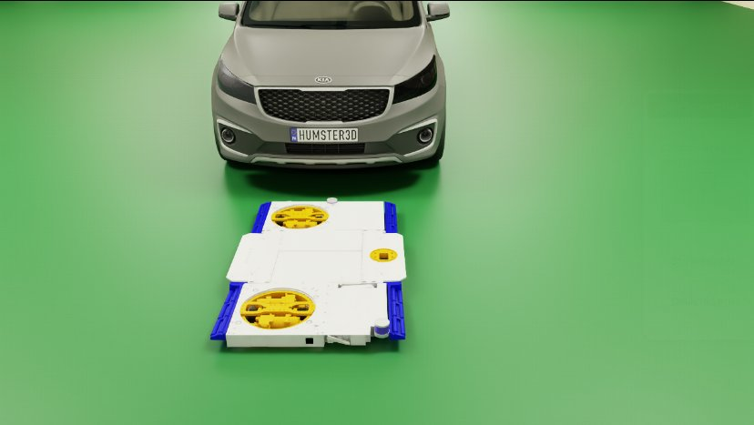
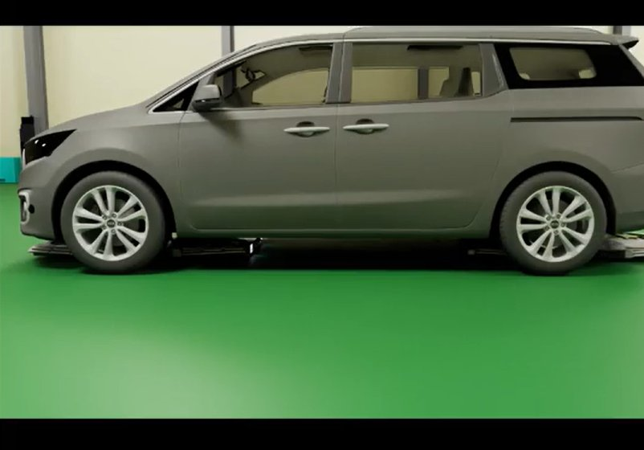

INDUSTRY · Ongoing
Isaac Sim
Isaac Sim
Algorithm-Validation Environment
This is a project at my current employer. For confidentiality, product, customer, and site details are omitted; the write-up focuses on the problem-solving process and engineering decisions.
TL;DR
- Building — solo — a digital twin that converts a validation workflow dependent on site visits and vehicle data collection into reproducible simulation tests.
- Modeled the parking robot's drivetrain and lifting motion, two 3D LiDARs, two RGB-D cameras, and an IMU in their real mounting configuration, and connected the actual Docker-deployed algorithms.
- Failure conditions that are hard to reproduce on site — like marker occlusion — are now replayed in simulation, shortening the improvement cycle.
PROBLEMValidation is chained to the site
If every perception change needs a real vehicle and a real site, the development cycle is hostage to site schedules. Failure conditions — marker occlusion, long range, low light — are also unsafe or impractical to reproduce on site. A simulation that faithfully mirrors the robot, sensors, and environment lets the same condition be replayed indefinitely while algorithms are validated.
METHOD 1Modeling robot, sensors, environment
- Robot — URDF-based model including drivetrain (joints, links, wheels) and the lifting motion
- Sensors — two 3D LiDARs (RTX LiDAR), two RGB-D cameras, and an IMU at their real mounting positions and specs
- Environment — cleaned scan data of the real operating site (mesh, materials, lighting), with RTX non-visual materials reflecting LiDAR reflectance
- Maintenance — migrated Isaac Sim 5.1.0 → 6.0.1 (sensor and ROS API changes)


METHOD 2Connecting the real algorithms
- Simulation sensor data published on ROS 2 Humble with the same topic structure as the real robot
- Structured configuration keeps sensor rates (Hz) consistent even in multi-sensor setups
- Docker-deployed production perception algorithms (marker detection etc.) run unmodified on simulation data
- Shell-script launch environment automates repeated test procedures
CURRENT RESULT
- End-to-end test environment secured: robot drive/lift, LiDAR·camera output, and marker detection running against real algorithms
- Docking-marker occlusion experiments replicated in simulation — cross-validated against field experiments
- Environment UI in progress: manual control, robot state and topic-rate monitoring, scenario placement